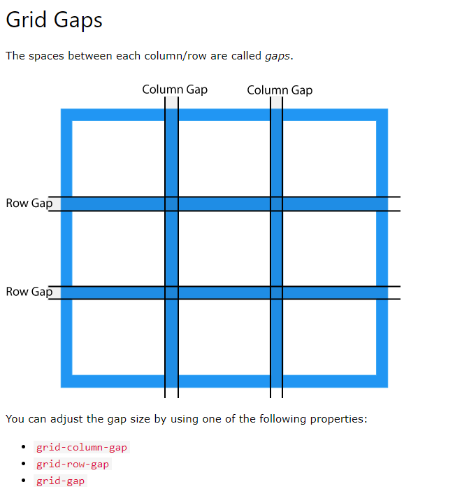

Dere kan tenke dere grid elemeneten som bokser (divs) som dere plasserer
slik dere ønsker
Når dere skal definere hvordan siden ser ut starter dere med å lage en
grid-container, inne i denne vil informasjonen om hvor mange kolonner dere
ønsker å dele siden opp i og alt rundt griden som mellomrom og rammer osv
Her ser dere hvordan det ser ut i "body" taggen
Slik ser det ut i "style" taggen
Så når vi lager en grid-container så definerer vi
hvor mange kolonner vi ønsker på siden
 ,
denne kan vi endre etterhvert dersom man vil ha 4 bokser eller 5 så kan man
legger man på slik at man har 4 eller 5 auto.
Men da vil alt skifte og vi vil måtte endre alt innhold deretter så det
lønner seg å planlegge dette godt i forveien.
,
denne kan vi endre etterhvert dersom man vil ha 4 bokser eller 5 så kan man
legger man på slik at man har 4 eller 5 auto.
Men da vil alt skifte og vi vil måtte endre alt innhold deretter så det
lønner seg å planlegge dette godt i forveien.
Items: dere kan lage items som dere selv bestemmer hvor store skal være,
på denne måten kan dere lage forskjellige størerelser på designet deres og dere
kan definere forskjellige "byggeklosser" som dere kan sette inn i siden i ønsket
størelse
Hvordan lage items
Her ser dere de 5
forskjellige css-ene til itemene brukt ovenfor. Det er mer css for å legge
til farge, tekst og ramme rundt som er tatt bort for å forenkle
kompleksiteten når dere skal ha items som strekker seg over flere kolonner
blir kompleksisteten litt større og dere må passe på hvor i dokumentet dere
befinner dere, men dette er jo bare å prøve å feile til det blir bra.
Det enkleste er å se for seg et rutenett hvor linjene rundt rutene er de
vi bruker når vi skal definere hvor vi starter og slutter.
Linjer i grid
item1 trenger egentlig ikke noe definisjon av
størelse da den tar "standaren" som er 1x1 "rute"
item2 sier at den starter på 1
(som er helt til venstre) og skal så avslutte på 3 som er rett før siste
"rute"

item3 sier at du skal starte på 2 som er etter
første "rute" og skal avslutte etter 4 som er etter 3 "rute"

item4 sier at den skal starte på 1 og avslutte
på 4, dvs at den skal spanne hele raden

item5 skal gå over flere rader, for å gjøre
dette, må man legge på og definere eksakt hvor den skal plasseres. Her sier
jeg at den skal starte på før siste kolonne og avslutte etter denne.
Jeg sier også at den skal starte på første rad og avslutte etter 2 rad ved å
bruke linje nummer 3 (som ligger under 2 rad). Derfor spanner den over 2 rader.

Mellomrom
Du kan ha mellomrom mellom rutene dine

grid-column-cap og grid-row-gap sier litt seg selv, men grid-gap er
begge deler satt sammen der column gap kommer først
